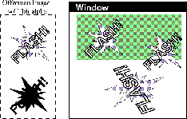

| CONTENTS | PREV | NEXT | Java 2D API |
The BufferedImage class is the main class supporting the immediate imaging mode. It manages an image in memory, providing ways to store pixel data, interpret pixel data, and to render the pixel data to a Graphics or Graphics2D context.
To create a BufferedImage, call the Component.createImage method; this returns a BufferedImage whose drawing characteristics match those of the component used to create it--the created image is opaque, has the foreground and background colors of the Component, and you can't adjust the transparency of the image. You could use this technique when you want to do double buffered drawing for animation in a component; the discussion "Drawing in an Offscreen Buffer" gives more details.
public Graphics2D createDemoGraphics2D(Graphics g) {
Graphics2D g2 = null;
int width = getSize().width;
int height = getSize().height;
if (offImg == null || offImg.getWidth() != width ||
offImg.getHeight() != height) {
offImg = (BufferedImage) createImage(width, height);
}
if (offImg != null) {
g2 = offImg.createGraphics();
g2.setBackground(getBackground());
}
// .. clear canvas ..
g2.clearRect(0, 0, width, height);
return g2;
}
You can also create a blank BufferedImage in memory using one of several constructor methods provided.
The BufferedImage class can be used to prepare graphic elements offscreen then copy them to the screen. This technique is especially useful when a graphic is complex or used repeatedly. For example, if you want to display a complicated shape se veral times, you could draw it once into an offscreen buffer and then copy it to different locations in the window. By drawing the shape once and copying it, you can display the graphics more quickly.The java.awt package facilitates the use of offscreen buffers by letting you draw to an Image object the same way that you draw to a window. All of the Java 2DTM API rendering features can be used when drawing to offscreen images.
Offscreen buffers are often used for animation. For example, you could use an offscreen buffer to draw an object once and then move it around in a window. Similarly, you could use an offscreen buffer to provide feedback as a user moves a graphic using the mouse. Instead of redrawing the graphic at every mouse location, you could draw the graphic once to an offscreen buffer, and then copy it to the mouse location as the user drags the mouse.1

Figure 5-3 demonstrates how a program can draw to an offscreen image and then copy that image into a window multiple times. The last time the image is copied, it is transformed. Note that transforming the image instead of redrawing it with the transformation might produce unsatisfactory results.
The simplest way to create an image that you can use as an offscreen buffer is to use the Component.createImage method.By creating an image whose color space, depth, and pixel layout exactly match the window into which you are drawing, the image can be efficiently blitted to a graphics device. This allows drawImage to do its job quickly.
You can also construct a BufferedImage object directly to use as an offscreen buffer. This is useful when you need control over the offscreen image's type or transparency.
BufferedImage supports several predefined image types:
A BufferedImage object can contain an alpha channel. In Figure 5-3, an alpha channel is used to distinguish painted and unpainted areas, allowing an irregular shape to appear over graphics that have a lready been painted (in this case, a shaded rectangle). In other cases, you might use alpha channel to blend the colors of the new image into those in the existing image.Note: unless you need alpha image data for transparency, as with the irregularly shaped images shown in Figure 5-2, you should avoid creating an off-screen buffer with alpha. Using alpha where it's unnecessary slows rendering performance.
GraphicsConfiguration provides convenience methods that automatically create buffered images in a format compatible with your configuration. You can also query the graphics configuration associated with the graphics device on which the window r esides to get the information you need to construct a compatible BufferedImage object.
To draw in a buffered image, you call its BufferedImage.createGraphics method, which returns a Graphics2D object. With this object, you can call all of the Graphics2D methods to draw graphics primitives, place text, and re nder other images in the image. This drawing technique supports dithering and other enhancements provided by the 2D imaging package. The following code illustrates the use of offscreen buffering:
public void update(Graphics g){Graphics2D g2 = (Graphics2D)g;if(firstTime){Dimension dim = getSize();int w = dim.width;int h = dim.height;area = new Rectangle(dim);bi = (BufferedImage)createImage(w, h); big = bi.createGraphics(); rect.setLocation(w/2-50, h/2-25); big.setStroke(new BasicStroke(8.0f)); firstTime = false; } // Clears the rectangle that was previously drawn. big.setColor(Color.white); big.clearRect(0, 0, area.width, area.height); // Draws and fills the newly positioned rectangle to the buffer. big.setPaint(strokePolka); big.draw(rect); big.setPaint(fillPolka); big.fill(rect); // Draws the buffered image to the screen. g2.drawImage(bi, 0, 0, this);}
In addition to drawing directly in a BufferedImage, you can directly access and manipulate the image's pixel data in a couple of ways. These are useful if you're implementing the BufferedImageOp filtering interface, as described in "Image Processing and Enhancement".You can use the BufferedImage.setRGB methods to directly set the value of a pixel or a pixel array to a specific RGB value. Note that no dithering is performed when you modify pixels directly. You can also manipulate pixel data by manipulating a WritableRaster object associated with a BufferedImage (see"Managing and Manipulating Rasters").
You can apply a filtering operation to a BufferedImage using an object that implements BufferedImageOp interface. Filtering and the classes that provide this filtering interface are discussed in "Image Processing and Enhancement".
To render a buffered image into a specific context, call one of the drawImage method of the context's Graphics object. For example, when rendering within a Component.paint method, you call drawImage on the graphics object passed to the method.
public void paint(Graphics g) {
if (getSize().width <= 0 || getSize().height <= 0)
return;
Graphics2D g2 = (Graphics2D) g;
if (offImg != null && isShowing()) {
g2.drawImage(offImg, 0, 0, this);
}
}